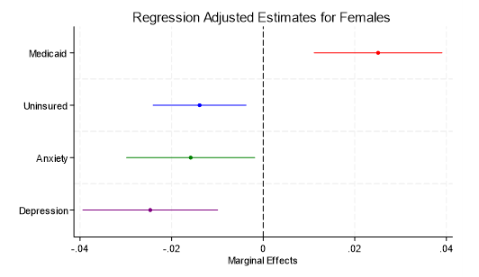
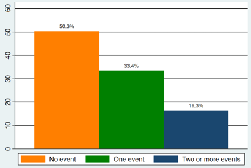

Research
Publications
1. Mukherjee, U., Pingle, M. (2023).
Book Review of Behavioural Economics and Experiments, by Ananish Chaudhuri
.
Journal of Behavioral Economics for Policy, 7(1), 51–52.
Working Papers
1. Job Market Paper: The Effects of Extended Medicaid Postpartum Coverage on Insurance and Mental Health Outcomes
With Sankar Mukhopadhyay
Abstract
| Despite the United States' high healthcare expenditure, maternal outcomes remain significantly worse compared to other developed nations. The American Rescue Plan Act (ARPA) of 2021 aimed to address this issue by allowing states to extend Medicaid postpartum coverage from 60 days to 12 months. In an era dominated by sharp differences and party ideology, most red and blue states moved quickly to adopt this extension. This paper evaluates the effects of this policy change using high-frequency data from the Household Pulse Survey and a staggered Difference-in-Differences (DiD) framework. Our findings indicate that the postpartum coverage expansion significantly increased Medicaid enrollment and reduced uninsurance rates among women of childbearing age. Additionally, the policy led to notable reductions in moderate to severe anxiety and depression, highlighting its positive impact on maternal mental health. The results underscore the importance of continuous health insurance coverage in improving maternal mental health. |  |
2. The Effects of Debt Relief on the Mental Health of Farmers
With Sankar Mukhopadhyay
Abstract
We use the quasi-exogenous variation from the farm debt relief programs established by the 2022 Inflation Reduction Act (IRA) to estimate the effect of debt relief on the mental health outcomes of the farmers in the U.S. Using high-frequency (monthly) nationally representative data from the Household Pulse Survey (HPS) and difference in difference regressions we find that the IRA debt relief programs improved mental health of farmers. Our preferred estimates suggest that among farmers anxiety decreased by 9.5% and depression by 9.0%. The effects are stronger among minority farmers. Anxiety decreased by 25.2%, and depression decreased by 28.0% among minority farmers. These results suggest that the IRA debt relief had a positive effect on the mental health of farmers, especially the minority farmers.
3. Impact of Negative Life Events on Financial Risk Taking
With Federico Guerrero
Abstract
| This paper investigates whether traumatic life events—specifically, the loss of a child—shape individuals’ willingness to engage in financial risk-taking. Using data from the 2004–2016 waves of the US Health and Retirement Study (HRS), we proxy risk preferences through observed portfolio decisions, focusing primarily on stock market participation as an indicator of financial risk-taking behavior. Our analysis reveals that individuals who have experienced the death of a child are less likely to invest in risky assets, suggesting the presence of a negative association between bereavement and financial risk-taking. However, while the evidence points to a potential correlation, the relationship is not statistically definitive. These findings contribute to the broader literature on how deeply personal and emotionally significant life shocks can influence economic decision-making, highlighting the possibility that traumatic experiences may have persistent effects even in domains unrelated to the original event. |

Proportion of stock holders conditional on the number of life events |
Work in Progress
The Hidden Costs of Care: Health and Economic Impacts of Informal Caregiving in the United States.
Solo-authored paper
Solo-authored paper
The Effects of Intergenerational Investment Advice.
With Federico Guerrero and Garret Ridinger
With Federico Guerrero and Garret Ridinger
Empathy in Economic Decision Making: Propensity to Be Helpful When Faced with Varied Costs.
With Mark Pingle
With Mark Pingle